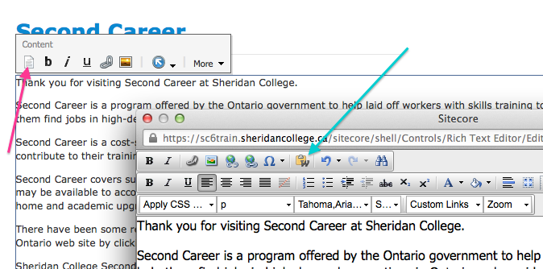
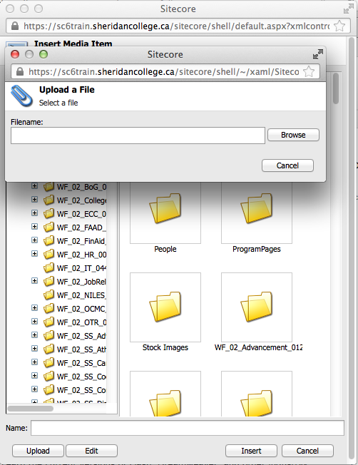

SiteCore 6 Training Manual
Choosing a Web Browser
For Windows users, the SiteCore Content Management System (CMS) recommends using Internet Explorer 8 or higher. If you are running an older version of Internet Explorer, please update to Internet Explorer 8 or 9. You can check your version of Internet Explorer in the Help > About menu. If you do not see a toolbar, press Alt on your keyboard to display it. To update Internet Explorer, click here.
If you are on Mac, use the most recent version of either Safari or Firefox. To update Firefox, click here. If Safari is outdated, it can be updated by running Software Update on your Mac. You may experience timeouts with Google Chrome on a slow server.

Login and Edit Content
To login to SiteCore, visit sccms.sheridaninstitute.ca/sitecore/login/ or sccms.sheridancollege.ca/sitecore/login.
By default, the Options tab may be collapsed. If so, click on Options to expand the options and select your login method, be it Desktop, Content Editor or Page Editor.
- Enter your login credentials
- Click Options to expand the User Interface menu
- Choose which user interface mode you would like to use (Desktop, Content Editor or Page Editor)
- Click Login to load the desired editor

What's New in SiteCore 6
You may already be familiar with the Content Editor and Desktop views. New in version 6 is the Page Editor view. Page Editor view allows you to edit the site while browsing. It is similar to and replaces the Web Edit option.
In SiteCore 6, the ribbon is new. The ribbon replaces the Floating Menu in previous versions of SiteCore.
This used to be called the Breadcrumb but has been renamed to Navigation Bar in this version of SiteCore. If you do not see the Navigation Bar, click the View tab and mark the box for the Navigation Bar. It should appear.

Clicking the second one—the one in the Navigation Bar—will take you to the Content Editor. When you click the first one, nothing happens. This appears to be a bug in Page Editor view.
Also new in SiteCore is the Floating Palette in Page Editor view. Clicking into an editable content block will make the Floating Palette appear.
Once checked out, you can click on the editable content areas to edit the page. Not all areas of the page are editable, and often you can only edit blocks of text and image references, not their layout and arrangement.
Once you login to the SiteCore Page Editor, you can navigate to the page you want to edit to edit it. You will need to double click to navigate from Page Editor view. Once you are at the page, hovering your mouse around the page will indicate which content blocks are editable by highlighting these areas with a dotted outline.
Editing a Page in Page Editor View
To edit text, simply click in an editable area and begin typing. Click the Save icon when you are done.
Copying and Pasting: Removing Text Formatting
In Page Editor view, you will need to use the rich text editor pop-up by clicking the Document icon (the first icon on the left) in the Floating Palette. This is indicated by the pink arrow in the screenshot below.
Copying and pasting text from a rich-text source like Microsoft Word, an email, or a website may negatively affect the default Sheridan website layout.
If you are copying and pasting from email, Microsoft Word or another website, you must use the Paste from Word, strip font button in the rich text editor to paste a plain text version without the formatting. It is the clipboard icon with a W. This is indicated by the turquoise arrow in the screenshot below.
When you click the Paste from Word, strip font button, another window will pop up. Paste your rich text in that box by either clicking Ctrl + V (Windows) or Cmd + V (Mac) or right clicking and selecting Paste from the context menu. Click the Paste button once your text is pasted. The window will close and your text will be pasted without formatting.
Once you are finished in the rich text editor, click Accept to add the changes and close the rich text editor. You should now see your changes.
Click the Save icon in the top left corner, indicated by the pink arrow. It will ask you to confirm your changes. Click OK. If you are finished editing, you can close the Page Editor by clicking Close. This does not log you out. If you would like to close and logout, click the Log off button in the ribbon, indicated by the turquoise box.
Creating Headings and Subtitles
If you need to create headings/subtitles, you will need to go into the rich text editor as explained above. Select the text you want to change and apply a header style from the paragraph style dropdown menu. You can use Heading 3 or 4. The default style is "Normal" and "p" and should be used for all body text. The dropdown menu is indicated by a pink arrow and the text that will be affected is indicated by the turquoise arrow.

The Content Editor view
In some cases you may need or prefer to edit in the Content Editor.
Content Editor at a glance
See the numbered list and image below for a quick reference of the Content Editor.
- Main toolbar with multiple tabs. Each tab has its own set of options. Save and Edit appear on all tabs.
- Content Tree of the Media Library
- Content area. If you're browsing through the Media Library, you will see folders. If you open a file, you will see the file's information.
- Quick menu at the top right to quickly access the Content Editor, Workbox and Media Library.
- Bottom toolbar to quickly access the Content Editor, Workbox and Media Library
Uneditable Text in Page Editor
In Page Editor view, you may come across a content block that you cannot edit. It may be that:
- the text is hard-coded into the site design and cannot be changed through the CMS
- it is a related item that resides elsewhere on the site and is fed in dynamically
Some text cannot be edited in Page Editor view. On the About Sheridan page, for example, you will not be able to edit some of these items in this manner. This happens on the Admissions, Services and About Sheridan pages.
Unless you are editing the Admissions, Services and About Sheridan pages, you should not need to worry about this and will most likely be able to edit all content areas in the Page Editor.
In the image below, we are trying to edit the Sheridan at a Glance section. We cannot edit it from Page Editor view so we must click the More button on the Floating Palette and click Edit the related item.

Once you have clicked Edit the related item, you will see a split-pane view with the Content Editor in the top pane and the site content in the bottom pane, as shown in the image below.
Below is an example of what the Content Editor in the top pane contains. It has been expanded vertically so you can see more. Normally it is the size of the above image.
Edit the fields as desired and click Save.
If you are editing a right sidebar item, there will be a checkbox that indicates to include this section in the right-hand sidebar. This area is the only area it can go. Unchecking this box will simply hide it. If you do not want to display it but you do not want to delete it either, just remove the checkmark and save. The right sidebar content is indicated by the pink arrow and the checkbox to make it appear is indicated by the turquoise arrow. In the image below it is selected so this item will appear.
Once you save your changes in the split-pane view, you will be returned to Page Editor view where you can resume navigating and editing pages.
Creating Links: Linking to Files and Pages
Internal Links and Linking to Documents
Internal links are links that link to other pages that reside on the Sheridan website. Linking throughout the Sheridan site can be done through the Page Editor. Simply select some text and click the Insert Link button on the floating palette. The Internal Link window will pop up. From here, you can navigate to the page you want to link to.
The link button is indicated by the pink arrow and the desired page we want to link to is indicated by the turquoise arrow. Press the Link button to add your link and close the window. Click Save to save your changes.
To link to a document (PDF, DOC, PPT, etc.), you will need to upload it to the Media Library first. This is explained in the next section. You would link to a document the same way you would link to an internal page.
External and E-mail links
If you want to provide a link to an external website address, an anchor link to a separate part of the page, or an email address link, you will need to click the Document icon to be taken to the rich text editor. The Document icon is the first button on the left in the Floating Palette.
An external link is a link that goes to another website. An anchor link is a link that goes to another section of the page. An e-mail link is a link that once clicked will load your default email client to send an email to the specified email address.
After clicking the Document icon in the Floating Palette, you will see the rich text editor. From here, click the link button with a globe on it to open the hyperlink manager.
Select the correct tab of the type of link you would like to create. In the image below, we are creating a hyperlink. Different options will be visible for the different types of links.
Properly creating links is important. Improperly creating links can cause 404 Page Not Found errors. Using the hyperlink manager will properly create these links for you so it is important that you use it create the type of link you want.
External Links
Select the text you would like to make into a link and click the link button.
- URL: This is the address of the link. All external links must be preceded by
http:// - Link text: This is the text that you highlighted before clicking the link button. This text will be clickable
- Target: This is the window that it will appear in. None leaves it at the default which is the current window. If you want it to open in a new window, select New Window as the target. You can ignore the other options.
E-mail Links
All email links must be preceded in their code by mailto: in order to function properly. Setting up the link using the E-mail tab will do this for you. Press OK to add the link. Press Accept to add your changes. Click Save to save your changes.
Uploading Images to the Media Library
Files will need to be added to the Media Library before being able to insert them into your pages.
It is recommended to add images to the Media Library through Page Editor view as doing it this way will add it to the correct folder/directory for that section.
From the Page Editor view
To access the Media Library from Page Editor view, navigate to the page you want to edit and click into an editable content area.
In the floating palette, click the image icon, which is indicated in the following image with a pink arrow.
Once you click the image icon, you will have the chance to upload an image to add in this content block or choose from already uploaded images. Click the Upload button. A small box will pop up and from here you can add an image. Click Browse to select an image from your computer.
If you only want to upload images and not add them to a content block, you can access the Media Library through the Content Editor. To enter the Content Editor from Page Editor view, click on Edit. See the turquoise arrow in the above image. See the following section for more information.
From the Content Editor view
If you reached the Content Editor from Page Editor view, you will see a split-pane version. The Media Library can be accessed through the bottom toolbar in the Content Editor or through the menu accessible using the blue menu at the top right corner of the page. Both are indicated by pink arrows in the following image.
Using the Media Library from the Content Editor is useful to see all media, not just page-specific media.
Navigate to the folder you want to upload files to then click Upload Files. You can upload images, PDF, Word documents and Flash files (SWF).

If you do not see the left sidebar section as in the image above—the Content Tree—enable it by clicking the View tab in the top toolbar then checking off the box for Content Tree.
Navigate to the folder/directory you want to upload the file to then click Upload Files. Choose the files you want to upload.
Uploading Multiple Files
You can upload more than one file at a time by holding different buttons on your keyboard and clicking on the files with your mouse.
To select a range of files, click the first file in the range of files, press Shift, and then select the last file in the range. This will select all the files between the first file clicked and the last file clicked.
To select multiple files that are not in a range, click on the first file, then press Control (Ctrl, Windows) or Command (Cmd, Mac) and click all the files after that that you want to include while holding Control or Command.
These are operating system-wide shortcuts that work in all instances of Windows Explorer and Mac Finder.
Image Information in SiteCore
Once you upload an image, you will be taken to a screen where you can specify its attributes. The only attribute you should add is the Alt text.
The "Alt" (alternate) text is the text that appears if the image doesn't appear, be it because images are disabled or the link path to the image is broken. It is also used for screen readers. A short description of the image should be added here. It is good practice to include the alternate text. A red warning will appear next to the field indicating that it should be added if it is blank.
Among the alternate text field, you will also see fields for the image width and height. Changing these will disrupt the original aspect ratio of the image. It is advised not to modify these values. Should you decide to change this anyway, doing so simply scales the image. It does not reduce or increase the file size. If you have large images, it is recommended that you shrink these using image editing software. See the section Editing Images for SiteCore for instructions.
You do not need to modify any other image attributes.
If you wish to change the file name, right click on the file and click Rename.

Changing Images in Page Editor view
Some images can be changed/re-referenced but some cannot. Click on the image, then the image icon to change the source image. A box will pop up allowing you to upload an image from your computer or choose from one of your uploaded files. Uploading images using Page Editor view have been described in the previous section.
The window that pops up is a smaller view of the Media Library called the Media Browser. The difference between the Media Library and the Media Browser is the presentation: the Media Browser is presented in a pop-up window in Page Editor view. You will have access to all of the media uploaded to this section rather than the full Media Library.
It is recommended that you do not use SiteCore for image editing (cropping, resizing, etc.) and that you instead use photo editing software like Photoshop. See the section Editing Images for SiteCore for instructions.
Saving and Submitting Your Changes
Workboxes and Workflows
- Workbox: Documents you have privileges to edit will be available in your Workbox.
- Workflow: A workflow is the process a document follows in order to be published.
Once you have made your changes, you will need to save them and Submit them to a moderator. This will move the document up in the workflow. A moderator is an editor with higher privileges.
To view your Workbox while in Page Editor view, click on the Home tab and then click Workbox. The top menu bar may be collapsed and you may not see the buttons below. Click on it to expand it and see the options.
To view your Workbox in Content Editor view, click on the blue arrow in the top right corner of the screen, or click on Workbox in the bottom toolbar.

Moderator Privileges
If you are a moderator, you will have the ability to approve the editing and creation of pages in your workflow. If set in your notification email settings (default), you should receive an email notification when a post is ready to be addressed.
A moderator can:
-
approve a document
- publish it (if given this privilege)
- submit it to a higher level moderator (if he or she does not have full privileges)
-
reject a document
- send it back for the user to make changes and resubmit
- make changes to the document and either publish or submit it (see above)
If you are at the highest moderation level, you can mark an item in your workflow for publishing. SiteCore publishes items ready for publishing at 12pm and 5pm every day.
Versions
SiteCore tracks changes to pages under the Versions tab.
If you are an administrator, you can revert back to, delete or hide a previous version.

From here you can remove/delete a version of the page. You can also compare versions and see the changes between the two. Changed sections are marked in red.

If you only want to unpublish/hide a version but not delete it, go to the Publish tab and click on Change. A window will pop-up allowing you to uncheck versions of the page to unpublish it.
You can also use this section to have a version only published for a certain amount of time. For example, if you have a 1-week special event happening in a month, you can create the content now, set it to be published at a later date, and have that version expire after the event is over.
Changing Your Password
If you wish to change your password, you can do so before logging in. Click Change Password on the login screen, which can be accessed at sccms.sheridaninstitute.ca/sitecore/login/.

To change your password, you’ll need to know your current password. Fill in the form and press Enter or click the Change Password button.

To recover your password, you’ll need to know your username. Enter it and you will receive an email to recover your password.
About the Content Tree
You may find it useful to view all the pages and files in a hierarchical tree-like structure as if you were browsing files in Windows Explorer on your Windows computer (or Finder’s list and column views on Mac). In the Content Editor, click on the View tab and check the box for Content Tree and the site tree/map will show up in a left-hand sidebar.
Searching for Content
You can search SiteCore’s Content Editor to find the page you are looking to edit. To search, click the Navigate tab then the Search button.

Editing Images for SiteCore
SiteCore comes with some image editing capabilities but it is recommended that you do not use them as they can be somewhat buggy. You may already have the Adobe Creative Suite installed on your computer. It is recommended that you use Photoshop or a free equivalent like GIMP or the online FotoFlexer.
Cropping and Resizing Images in Photoshop
Manually crop your images with Photoshop’s crop tool or specify a crop width and height.
Resize your images without cropping: Go into Image > Image Size, or simply press Cmd+Alt+I (Mac) or Ctrl+Alt+I (Windows).
Make sure the Constrain proportions box is checked off. A chainlink will show up to show that width and height are now linked. The image will skew and maintain the aspect ratio.
Optimizing Images for Web
This step isn't absolutely necessary but it reduces the file size so that the page loads faster.
Once you are happy with your image and you are ready to upload it, it’s time to save it in a web-friendly format. Go into File and click on Save for Web & Devices. You can opt for a high-quality JPEG (for photographs and most graphics) or PNG-24 (for graphics with transparency).
When saving for web and devices, you will be given the option as to which format you would like to use. If you are using photographs, a high quality JPEG will suffice. PNG-24 are ideal for high quality graphics, especially if they require transparency support. PNG are somewhat larger in file size than JPEG and therefore take slightly longer to load. Most of the time, JPEG will work just fine. Choose your preferred format (JPEG vs. PNG), leave the default settings and press Save.
Quick Reference Guide
Quick Overview
Please see the video 01 - Login and Edit (1 min 34 sec) for a quick demonstration on navigating to a page and editing the content in Page Editor view.
Advanced Tips
Below are some advanced tips that power users may find useful. This section is supplementary reading for those who would like to make the most out of SiteCore.
Closing and Reopening the Page Editor for faster browsing
Navigating to different portions of the site using the Page Editor can be slow depending on the speed of the server or your connection. You can close the Page Editor by clicking the Close button.

Once you are on the page you want to edit, you will notice you are no longer in the Page Editor. To get to the Page Editor again, simply add the following text to the end of the URL in the address bar of your browser and hit Enter/Return. You must be logged in for this to work.
?sc_mode=edit
Once you reload the page with the aforementioned URL suffix, Page Editor will be enabled on this page and you will be able to modify its editable content blocks.
Remembering this little snippet of text will allow you to painlessly navigate the site and load the Page Editor only when needed, provided that you are logged in.
Quickly Accessing the Content Editor
Page Editor view is great for navigating and editing small blocks of content but if you find that you want to quickly access the content editor, add the following text after /sitecore/ to the URL.
shell/Applications/Content%20Manager/
Further Reading
If you would like to learn more about SiteCore, you can visit any of the websites below: